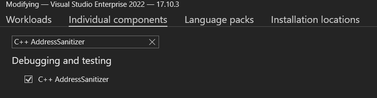
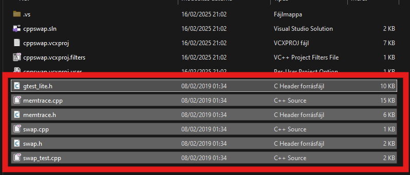
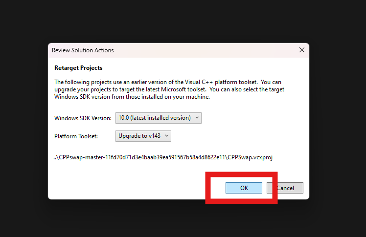

Visual Studio
A Visual Studio a Microsoft fejlesztőkörnyezete, beépített devkitekkel, debuggerrel, profilerrel és egyéb finom dolgokkal. Works out of the box, nem bonyolult a setup. Hátránya, hogy Windows rendszeren kívül nem létezik a Windowson használható verziója.
Nem összekeverendő a Visual Studio Code -al.
Ajánlott platformok
Windows
VS Community Edition
A Visual Studio Community Edition teljesen ingyenesen letölthető a https://visualstudio.microsoft.com/free-developer-offers/ linkről. Fontos, hogy a bal oldali, "Visual Studio Community" opciót válasszuk, a Visual Studio Code egy teljesen más szoftver.
VS Enterprise Edition
Egyetemistaként elérhető ingyenes licensz a Visual Studio Enterprise verziójához. Ehhez először, ha még nem tetted meg, a https://login.bme.hu/admin/username/ oldalon kell beállíts egy Office 365 emailt. Ebbe az emailbe egyébként Outlook-on keresztül egyszerűen be tudsz lépni. Ezután a https://azureforeducation.microsoft.com/devtools oldalon ezzel a fiókkal belépve tudod a VS és más hasznos(pl. Windows) aktiváló kulcsokat elérni.
Telepítés
A Visual Studio Installer program központosítva tud VS verziókat telepíteni és módosítnai. Ezt megnyitva, ha az "Installed" fülön még nincs ott a kívánt verzió(Visual Studio 2022), akkor ezt az "Available" fülről lehet telepíteni.
A felugró ablakból a tárgyhoz a "Desktop Development with C++" Workload-ra lesz csak szükség. Emellett az "Individual components" fülről ajánlott még a "C++ AddressSanitizer" komponens.


Projekt létrehozása
Visual Studioban a fő struktúra a következő: A root egy "solution" amiben több project is lehet. Ez teszi lehetővé azt, hogy komplex programokat akár részenként is használhassunk.
Új projekt létrehozásához indítsuk el a Visual Studiot, majd kattintsunk a "Create a new project" gombra.
Ezután válasszuk az alábbi opciót:

Ezután adunk egy nevet a projectnek, kiválasztjuk hogy hova kerüljön(egyetem mappa, stb.), valamint, ha nem szeretnénk hogy a project és a solution ugyanabban a mappában legyen(nagyobb projekteknél nem ajánlott), akkor adunk egy külön nevet a solutionnek is.

A Solution Explorert, ha nem jelent meg, érdemes előhozni a View>Solution Explorer opcióval. Általában az ablak jobb oldalán jelenik meg, de személyes preferencia, hogy ki hova helyezi el.
Ajánlott beállítások
A Projektünk beállításait a "Solution Explorer"-ben a projektre jobbklikk>Properties -re kattintva érhetjük el.
Command Line opciók
A Project Properties -en belül a C/C++>Command Line fülön az "Additional Options" részbe tudunk command line flageket írni.
Ajánlott flagek:
/Wall/WX(ez aWerrormegfelelője)/permissive-/fsanitize=address
Hello World!
Hozzunk létre egy új file-t main.cpp néven. Ezt a Solution Explorer-ben a "Source Files"-re jobb kattintva Add>New item...>C++ file opciókkal tehetjük meg.
A main.cpp fileba az alábbi kódrészletet illesztve:
#include <iostream>
int main(){
std::cout << "Hello, World!";
return 0;
}
Majd az F5 billenytűt leütve letesztelhetjük, hogy műküdik -e a setupunk.

A "Source Files", "Header Files" stb. nem valódi mappák, a Visual Studio "Filer"-nek nevezi őket, a fileok valójában mind ugyanabban a mappában vannak. Ez megsegíti a headerekkel való munkát.
Meglévő fileokat az új fileok létrehozásához hasonlóan tudunk létrehozni, a New item... helyett az Existing item... menüpontot kell választanunk.
CPPSwap feladat beállítása
Töltsük le a https://git.ik.bme.hu/Prog2/ell_feladat/CPPswap oldalról a feladat alapját. Ezek a fileok közül a .h és .cpp fileokra lesz szükség.

Hozzunk létre egy új Visual Studio projektet.

Másoljuk a fentebb említett fileokat a projekt mappájába (ahol a .vcxproj file van). Csak üres mappába hozzunk létre VS Projektet, aztán másoljuk be a szükséges fileokat.

Ezután adjuk hozzá a fileokat a projekthez.

Ezután futtassuk a projektet.
A Solution Explorerből keressük ki a swap.cpp filet és nyissuk meg.
(A #error preprocesszor direktívával lehet szándékos fordításidejű hibát tenni a kódba hibaüzenettel együtt)

Megjegyzés a laborfeladatokhoz:
Néhány feladathoz jön Visual Studio projekt és solution file, alternatívaként ezek is használatók. Amikor a VS felajánlja, hogy upgradeljük a Windows SDK-t, akkor fogadjuk el a promptot.
